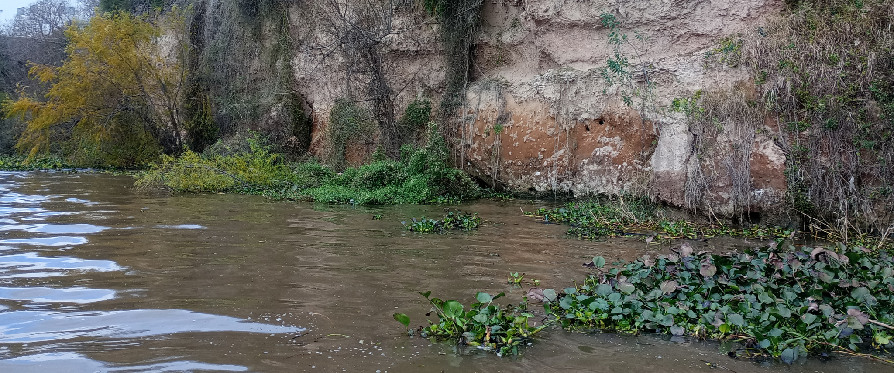
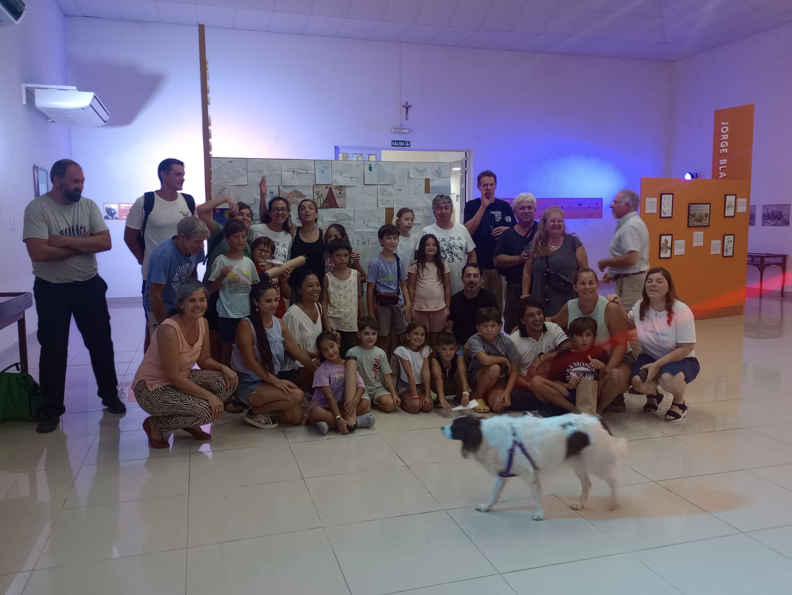
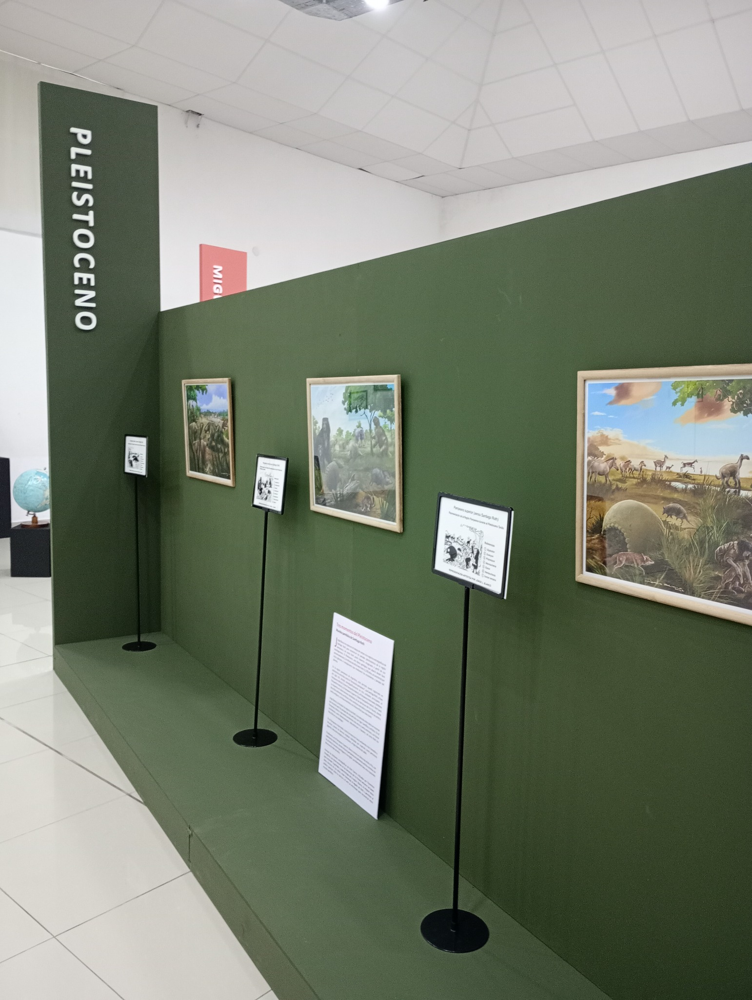

Ciudad, barrancas e islas
El Paraná de la costa, la pesca, la navegación, las memorias cotidianas y los vínculos que forman parte de la vida local.
Jornadas de Difusión Científica
Un río conocido, desconocido, mítico y futuro. Una propuesta del Museo Scasso para volver a mirar el Paraná como territorio vivo, memoria natural, paisaje cotidiano y desafío común.
Información para visitantes
Habrá propuestas para escuelas, familias, infancias y público general. El programa completo se publicará a medida que se acerque la fecha.
El Paraná también es un archivo de historias, sedimentos, animales, objetos, relatos y preguntas sobre el futuro del territorio.Durante nueve días, el Museo Scasso propone recorrer esos mundos visibles e invisibles desde la ciencia, la educación, el patrimonio, la imaginación y la participación comunitaria.


Ejes 2026
El Paraná de la costa, la pesca, la navegación, las memorias cotidianas y los vínculos que forman parte de la vida local.
El río que no siempre vemos, con organismos, fósiles, microambientes, procesos naturales y tiempo profundo.
Imaginarios populares, miedos, figuras y narraciones que expresan la relación histórica entre las comunidades y el río.
Preguntas sobre conservación, ambiente, ciudadanía y modos de habitar el Paraná en las próximas generaciones.
Actividades previstas
Las jornadas reunirán propuestas para escuelas, infancias, familias y público general. La agenda ordenará actividades de sala, recorridos, talleres, charlas, registros audiovisuales y espacios de encuentro.
Espacios dedicados al Paraná, sus ambientes, su historia natural y sus relatos.
Piezas, réplicas, imágenes, muestras y materiales para observar y comparar.
Encuentros con especialistas, docentes, investigadores y referentes del territorio.
Actividades educativas sobre biodiversidad, agua, fósiles, islas y ambiente.
Proyecciones, imágenes y ambientes visuales para construir una experiencia inmersiva.
Entrevistas, registros, podcast, streaming y producción de contenidos durante las jornadas.
Un lugar para permanecer, conversar y compartir la experiencia entre actividades.
Propuestas de exploración, juego, observación y participación para niñas y niños.
El museo se transforma en un recorrido por ambientes, objetos, imágenes, sonidos y relatos vinculados al Paraná.
Museografía y territorio
La edición 2026 combina exhibición, divulgación científica, actividades educativas y recursos escénicos para mirar el río desde distintas escalas. La ciudad, la isla, el agua, el sedimento, los organismos, los fósiles, los mitos y los futuros posibles aparecen como partes de una misma trama territorial.
El objetivo es que el Museo Scasso funcione como un espacio de encuentro entre conocimiento científico, memoria local y experiencia sensible.
Imágenes
Imágenes de referencia de la edición anterior de Mundos Perdidos, donde el museo se transformó en un espacio de divulgación, encuentro y experiencia visual.



Lugar
Don Bosco 580, San Nicolás de los Arroyos, Provincia de Buenos Aires.
Información
Mundos Perdidos 2026 reúne ciencia, educación, patrimonio, arte y comunidad en torno al Paraná. El programa completo se publicará próximamente.
Consultas info@museoscasso.com.ar